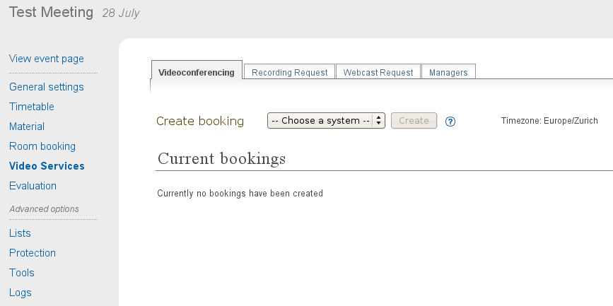
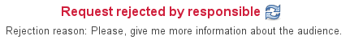
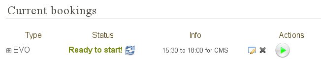
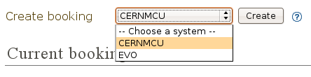
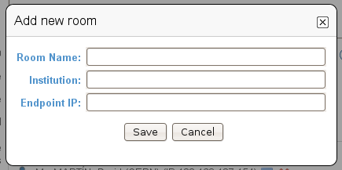
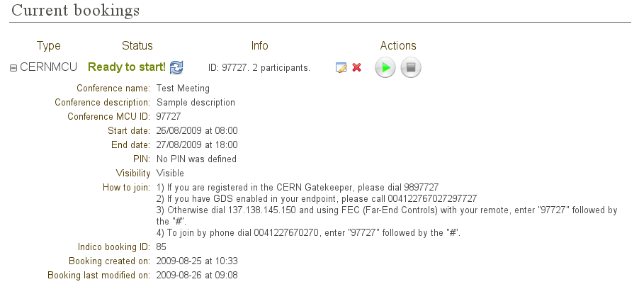
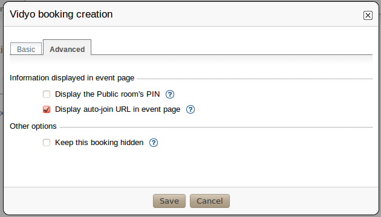
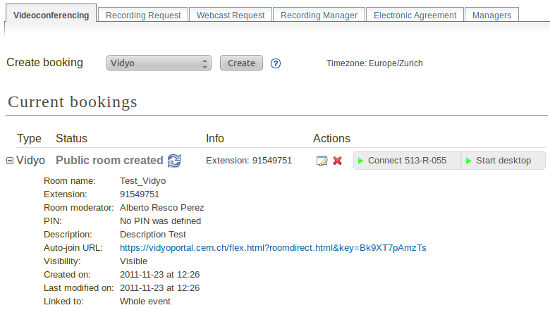
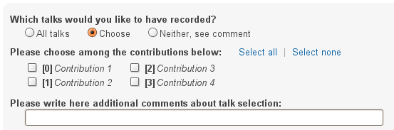

3.1. Introduction¶
Indico now allows event managers to book and program remote collaboration sessions (videoconferences, webcasts, etc.) and recording requests associated with their events. For example, EVO, the CERN MCU service, or Vidyo systems can be used. Other Indico users can see information about these videoconferences in the public pages of the events.
Event managers can now also perform service requests by filling out forms that now appear inside Indico’s event management interface. Examples of such requests are the Recording Request and the Webcast Request.
Three different kinds of Indico users can make use of this functionality:
- The creator of an event.
- An event manager appointed by the creator of the event (or another manager).
- A Video Services manager, appointed by the event creator or one of the event managers. These users have privileges to access the Video Services section but cannot access any other section in the event management interface.
After an event is created, the management interface of an Indico event is similar to figure 1:

Figure 1. Management interface for an Indico event, currently in the General Settings section. The Video Services section is highlighted in orange.
Your event should have a Video Services section (marked in orange), unless the Indico administrators have deactivated all the Video Services systems for your kind of event (Lecture, Meeting, or Conference) or for all kinds of event.
For more information on the EVO and CERN’s MCU services, please visit the Videoconferencing technologies at CERN page.
3.2. The Video Services section¶
Click on the Video Services link to access the Video Services section.
Note : the page that will be loaded now will possibly be HTTPs (the URL in the browser should start by https:// ... ).
In the Video Services section, you will see something similar to this:

Figure 2. Video Services section for an event. The Videoconferencing tab is selected.
You should see several tabs. Only tabs corresponding to systems enabled for your kind of event (Lecture, Meeting, Conference) will appear. In the above image, the tabs are Videoconferencing, Recording Request , Webcast Request and Managers .
The Managers tab is always present and lets you appoint other people so that they have rights to manage part of, or all of, the Video Services section. We will talk about the Managers tab later.
The other tabs group the different Video Services systems. At the time this guide was written, there are five such systems: EVO, CERNMCU and Vidyo (all of them Video Conference systems grouped under the Videoconferencing tab), Recording Request and Webcast Request.
3.3. Video Services system types¶
There are two types of system: booking systems and request systems.
Booking systems let you book resources in videoconferencing systems, such as virtual meeting room in EVO (Enabling Virtual Organizations) or a videoconference in CERN’s MCU.
Request systems let you request services for your event, such as requesting that your event be recorded ( Recording Request) or webcasted ( Webcast Request) .
3.3.1. Booking systems¶
EVO, CERNMCU and Vidyo are booking systems. They let you make a videoconference booking in EVO, Vidyo or CERN’s MCU associated with your event. You can make more than one booking of each type for your Indico Event.
This chapter of the guide discusses common functions of these systems. For more details about how to manage booking for the EVO system in particular, see chapter EVO system. For more details about CERNMCU bookings, please see chapter CERNMCU system For more details about how to manage booking for the Vidyo system see chapter Vidyo system
3.3.1.1. Creating a booking¶
To create a booking, select a system (EVO, CERNMCU or Vidyo) and click Create .

Figure 3. Creating an EVO booking.
A pop-up dialogue will appear, asking you for data. This pop-up has two tabs: Basic and Advanced . The Basic tab contains the basic, important data that you need to fill in in order to make a booking.

Figure 4. Dialogue to create an EVO booking. Basic tab.
The content under the Advanced tab contains more details you may want to configure about your booking.

Figure 5. Advanced tab to create a booking.
After you have filled in the fields, press the Save button. If there is a mistake with any of the fields, they will be highlighted in red. For example, in figure 6 below, there are two problems: the description is empty and the end date of the booking is before the start date (which is unreasonable).

Figure 6. While creating a booking, some fields were highlighted in red in order to point out mistakes.
If there were no mistakes, please wait until the booking is created in the EVO system or the CERNMCU system.
3.3.1.2. List of bookings¶
After you have created the booking, it will appear under Current Bookings . In figure 7 below, two bookings have already been created. As you can see, the most recently created or modified booking is highlighted in yellow for some seconds.

Figure 7. List of already created bookings.
When bookings have been created, they are organized as rows of a table / list.
The Type column specifies the type of booking (EVO, CERNMCU or Vidyo).
The Status column specifies the current status of the booking. If you want to reload or update the status, press the
 button
(reload) . This will query the remote system (EVO, CERNMCU or Vidyo) to
see if there have been any changes. For example, maybe it is
already time to start the booking; or maybe an administrator of EVO,
CERNMCU or Vidyo has deleted your booking for some reason.
button
(reload) . This will query the remote system (EVO, CERNMCU or Vidyo) to
see if there have been any changes. For example, maybe it is
already time to start the booking; or maybe an administrator of EVO,
CERNMCU or Vidyo has deleted your booking for some reason.The Info column gives a short summary of relevant information about this booking. This depends on the kind of booking involved.
Between Info and Actions, you will find the
 button
(edit ) and the
button
(edit ) and the  button (delete ).
button (delete ).If you press the edit button, the same pop-up dialogue as when you created the booking will appear, and you will be able to modify the data.
If you press the delete button, after a confirmation warning, you will be able to delete the booking (both from Indico and from the remote system transparently).

Figure 8. Confirmation dialogue for removing a booking .
It is possible that the delete button is disabled: . This means you cannot delete the booking at the moment. For example, the EVO system does not allow you to delete bookings which have already taken place.
In the Actions column, you can trigger some commands related to your booking. Currently the two commands available are:
 (Start ) and
(Start ) and  (Stop ).
(Stop ).- If you press the Start button, the videoconference will start.
- The Stop button will stop it.
- If they are disabled (greyed out), you cannot perform this action at the moment.
Please notice the button on the left of each row. If you press it, you will get detailed information about the booking.

Figure 9. List of already created bookings, showing details of the first booking .
Finally, please note that the current timezone of the times that appear on this page is shown to you on the top right corner, as a reminder. It is the same timezone as the one you set up for the event in the General Settings section.

Figure 10. Timezone reminder.
3.3.1.3. Event display¶
After you have created the bookings, they will appear on the event display page, as shown in figure 11 below:

Figure 11. Event display page for a meeting, showing the bookings previously made .
If you do not want your booking(s) to be publicly visible, check the Keep this booking hidden checkbox in the Advanced tab of the creation and modification pop-up dialogues.
For details about how bookings are displayed in the Event display page, please consult the How to join a video service document.
3.3.2. Request systems¶
Recording Request and Webcast Request are request systems.
Instead of performing a booking in a videoconference system, such as EVO, CERN’s MCU or Vidyo, these parts of the Video Services section are useful to request a service for your event.
You can only perform one request of each type for your Indico Event, although you can change its details after you send it.
Click on the Recording Request or Webcast Request tabs to request these services. You will have to fill in a form for this request.
By filling in these forms, you are requesting a CERN Recording expert to come and record your event, or a CERN Webcast expert to webcast your event.
These forms are very detailed and their purpose is to facilitate the communication between you and the Recording or Webcast services. Please take some time to fill them in correctly as that will save both you and the services’ responsibles valuable time.
We will discuss the details of the Recording Request form and the Webcast Request form later, in chapters Recording Request system and Webcast Request system The parts common to both forms are found at their top and bottom: they are the buttons to send, modify or withdraw the request.


Figures 12 and 13 . Buttons to send / modify / withdraw a request.
Once the request has been submitted, a line will appear at the top with the current status of the request, as shown in figure 14 below.

Figure 14. Status of a request.
The initial status will be Request successfully sent . This means that an email has been sent to the corresponding responsible person with all the details that you input in the form. After the service responsible has decided if he accepts your request or not, he will either accept or reject the request.
If the request is accepted, the status will look like this:

Figure 15. Request accepted status .
If the request has been rejected, the status will look like this:

Figure 16. Request rejected status, showing the rejection reason.
You can see that in this case the responsible has also given you a reason for his rejection.
In both cases (accept and reject), the following people will receive an email as notification:
- The creator of the event.
- Any managers of the event.
- Any Video Services Managers (be it of all systems, or only of the corresponding one).
You can also come back to the page to see the status, or if you do
not want to reload the page, use the button to reload
(update) the status.
Even after a request is accepted or rejected, you can still modify it, which will trigger another email to be sent to the responsible person.
3.3.3. The Managers tab¶
The Managers tab lets you appoint other people to have rights to access and use the Video Services section, even if these people are not Event Managers themselves.
There are two types of Managers: Video Services Managers and Individual System Managers .

Figure 17. Managers tab inside the Video Services section.
People added as Video Services Managers will be able to access all the tabs of the Video Services section (Collaboration, Recording Request, etc., and the Managers tab too) and perform any operation that you can perform there.
In order to add someone, you can either click on Add Existing which will bring a standard user search pop-up dialogue, or click Add from favourites which will bring up your favourite users.

Figure 18. Adding a manager. We can add an existing user by searching or by selecting one of our favourite ones.
Remember you can always change your favourite users by clicking on your name at the top right corner and then going to Favorites .

Figure 19. Indico status bar. The user name is highlighted in orange. Click on it to go to your profile and then click on Favorites to add or remove favourite users.
People added as a Manager for an individual system will see only one of the tabs (the corresponding one for that system) and will be able to manipulate only bookings or requests of that system.
As shown in figure 20 below, you can see how someone who is a Video Services Manager views the management interface of an event:

Figure 20. View of the management interface by a manager. Only the Video Services section is available.
And here how someone who is only a CERNMCU Manager views it:

Figure 21. View of the management interface by a CERNMCU manager. Only the Videconferencing tab is available.
As you can see, even if the CERNMCU Manager can see the Collaboration tab, he or she cannot see or create bookings of other systems (EVO or Vidyo), unless of course he is also a manager of that other system.
People added in the Managers tab can access the Video Services
section of an event by clicking on the  icon
(Modify Event ).
icon
(Modify Event ).
In summary, you should add someone as Video Services Manager if you want to give that person great control over the Video Services section, including appointing other Video Service Managers; and add people as individual system managers if you want to keep control over what they can do.
3.4. Details about individual systems¶
3.4.1. The EVO system¶
EVO is a videoconferencing system provided by Caltech, where you can book a virtual room (an EVO meeting). Users can join this virtual room and have a videoconferencing session together, send video, talk, chat and share slides. To use EVO, you will need a PC equipped with a webcam or an H.323 device (tipically a Tandberg or Polycom. You will also need to create an account in EVO (click on Register ). For more information, see About EVO and EVO’s manual .
All IT supported CERN’s videoconference rooms are equipped with a pre-configured PC that already has an account in EVO; the PC will use the room’s H.323 device (Tandberg). When joining an EVO meeting through Indico with this PC, the PC will join the EVO meeting automatically (its username will be the room code, such as 513-R-055).
The EVO system is under the Videoconferencing tab.
3.4.1.1. Creating an EVO booking¶
To create an EVO booking, select EVO in the list of systems and then click on Create .

Figure 22. Creating an EVO booking.
The EVO creation pop-up dialogue will appear:
Figure 23. EVO booking creation dialogue.
In the Basic tab, you should fill in the following fields:
Community : one of the EVO communities, such as CMS, Atlas, LHCb, and Alice. The booking will be created in this EVO community.
Meeting title : the title of your meeting in EVO. When people launch the EVO client to join the video conference, that is what they will see. Indico automatically fills in this field with the name of your Indico event but you can change it.
Description : a description of your EVO meeting. Indico fills this automatically with the description from your Indico event but you can change it.
Start time : the start date for your EVO meeting, i.e. the moment from which you can start videoconferencing. Indico will automatically fill in this field with the time your Indico event starts, minus some margin minutes. If you want to change it, click on the field and a calendar will pop up:

Figure 24. Choosing the start time for an EVO booking.
Use the calendar to choose a date of your liking.
Ending time : the time your EVO meeting will end. By default, Indico fills this with the ending time of your event. You can change this the same way as the Start time field.
Access password : if you want to protect your EVO meeting with a password, type it here. Other people will have to provide this password in order to access the meeting. Please note that the password will never be displayed back to you for security reasons, so be sure of what you write here. If you don’t want to protect your EVO meeting with a password, leave this field empty.
In the Advanced tab, there are only two options at the moment:
Keep booking synchronized with event : by default this option is enabled. If enabled, it means that if you change the starting / ending times of your Indico event, your EVO booking times will change accordingly.
For example, your Indico event starts at 8am and your EVO meeting starts at 10am. Later, you realize you made a mistake and your Indico meeting should start one hour later. You go to the General Settings section and change the starting time to 9am. If the Keep booking synchronized with event option was enabled, then the starting date of your EVO booking will have changed automatically to 11am (+1h from before), without your having to do the operation yourself.
Keep this booking hidden : by default this option is not enabled. If you activate it, your booking will not appear on the public display page of your event.
Figure 25. Advanced tab for an EVO booking.
3.4.1.2. After creating an EVO booking¶
Once your booking has been created, it will appear under the Current Bookings List.

Figure 26. List of current bookings after an EVO booking was created.
From left to right:
1. You can press the button to see the detailed information of your booking:
Figure 27. Details of an EVO booking.
The details given are:
- Meeting title, Community, Start date, End date, Meeting description, Access password, Hidden : these are the fields that you have input in the creation dialogue.
- Auto-join URL : this is the URL that you can give to other people so that they can join the meeting. Just paste it into a browser and the EVO client will be launched. After authentication, the client will automatically join the meeting, prompting the user for a password if an access password was set up.
- Indico booking ID : this is an ID assigned by Indico to this booking. Use it if you have any problem and you need to contact Indico support.
- Booking created on : this shows when the booking was created.
- Booking last modified on : this shows the last time that the booking information was modified.
Also, in case of problems, there will be information in red in the details. More on that in section Problems when creating or modifying bookings
- EVO refers to the type of this booking.
3. The initial Status is usually Booking Created . The possible statuses are:
Booking created : you just created or modified an EVO booking, and you cannot start it yet.
Ready to start! : you can start the videoconference that you have already booked. The button
should be enabled. Press it to
start the videoconference.Already took place : after the videoconference has ended.
You can press the
button to reload (update) the status,
in case it has changed while you had the Indico page open.
4. Info : normally this will show the starting and ending times, and the booking’s community. However, if there are problems in the EVO system, this will show some information in red. More on that in section Problems when creating or modifying bookings
5. button (edit ). Press this button to change the data
of the booking, in case you need to perform a correction or a
change. Your changes will change the booking in EVO too.
6. button (remove ). Press this to delete your booking.
You will be asked for confirmation. It is possible that this button
is disabled, like this: . This indicates that you cannot
delete the EVO booking. This happens when the booking is ongoing
(the status message is Ready to Start! ) or when the booking
already took place.
7. button (start videoconference ). Press this button
to launch the EVO client and have your PC join the videoconference
automatically. The button will be disabled ( ) if you
cannot join the videoconference yet, or if the videoconference
already took place. See section 4.1.5. for more details.
) if you
cannot join the videoconference yet, or if the videoconference
already took place. See section 4.1.5. for more details.
3.4.1.3. Problems when creating or modifying a booking¶
In the booking creation and modification dialogue, it is possible that when you try to save your booking, some of the fields are highlighted in red.
Figure 28. In the EVO booking creation dialogue, some fields were highlighted in red in order to point out mistakes.
Situations where this can happen:
- You left the meeting title empty . The title field will be highlighted in red.
- You left the meeting description empty . The description field will be highlighted in red.
- The start time is too soon . The start time field will be
highlighted in red, and if you hover the mouse over it the reason
for the problem will be shown. This can happen for two reasons:
- The start time is under the limit of your Indico Event start time (currently the limit is 60 min before the Indico Event start time)
- The start time is in the past . For example, if your clock shows that it’s 4pm, you will not be able to create a meeting that starts at 3pm of the same day (or a previous day). The allowed margin is 30 min (so 3.30pm would be allowed).
- The ending time is too late . The ending time field will be highlighted in red. The ending time cannot be more than 60 min after the ending time of the Indico event.
- The ending time is in the past . The ending time field will be highlighted in red.
- The ending time is before the start time . Both fields will be highlighted in red.
- EVO considers the booking as duplicated. This happens if your booking has the same title and very similar (around 5 min) start and end times as a pre-existing booking. In this case, you will get a warning dialogue and the title, start time and end time fields will be highlighted in red. Try to change either the title or the times to get rid of this problem.
Problems when you come to the Collaboration tab or when you update the status:
- The booking has been deleted by EVO . It is possible that the administrators of the EVO system have deleted your booking for some reason. Indico checks this and informs you if it is the case. This occurrence should be very rare.
- The booking’s data has been changed by EVO . It is possible that the administrators of the EVO system have modified your booking for some reason (maybe the title was inappropriate, or a similar reason). Indico checks for this and informs you if it is the case, listing the changed fields.
3.4.1.4. Event display page¶
As long as you did not mark your EVO bookings as Hidden , they will appear on the public display page of your event.
Indico events of type meeting and lecture will appear like this:
Figure 29. The event display page of an Indico event of type “meeting”. The previously booked videoconferences are shown.
In Indico events of type conference , the EVO meetings will appear in the Video Services section of the event public page:

Figure 30 . The event display page of an Indico event of type “conferences”. The previously booked videoconferences are shown in the Video Services section.
3.4.1.5. Starting an EVO videoconference¶
If the (Start) button is green, it is possible to start
the videoconference.

Figure 31. An already created EVO booking. The Start button is green, so the videoconference can be started.
For this, Indico will load the EVO client (Koala ), the same way that you would do by pasting the auto-join URL in a browser.

Figure 32. Koala loading (with auto-login already configured in the client)

Figure 33. Koala after auto-joining an EVO meeting from Indico
3.4.2. The CERNMCU system¶
The CERNMCU system is based on a Codian MCU (similarly to EsNet service) and lets you book videoconferences in CERN’s MCU (Multipoint Control Unit). This allows you to enjoy multi-point videoconferences between rooms and people equipped with an H.323 device. Indico will allow you to pre-define a list of remote participants (typically, CERN rooms).
Videoconferences booked in this way through Indico can be started and stopped through Indico as well. Indico will tell CERN’s MCU to connect all the pre-defined remote participants and start a videoconference. However, other persons or rooms can join the videoconference by following the instructions generated with each boking.
The CERNMCU system is under the Videoconferencing tab.
3.4.2.1. Creating a CERNMCU booking¶
To create a CERNMCU booking, select CERNMCU in the list of systems and then click on Create .

Figure 34. Creating an CERNMCU booking.
The CERNMCU creation pop-up dialogue will appear:

Figure 35. Dialog to create a CERNMCU booking.
In the Basic tab, you should fill in the following fields:
Name : the name of your videoconference. Two simultaneously scheduled conferences cannot exist in the MCU with the same name. Indico automatically fills in this field with the name of your Indico event, but you can change it.
Description : a description of your MCU conference. Indico automatically fills in this field with the description from your Indico event, but you can change it.
ID : a unique 5-digit number that identifies your conference inside the MCU. It will also be needed by people who want to join the videoconference even if they were not added to the list of Remote Participants .
- If you choose the Let Indico choose option, Indico will choose a 5-digit number itself and ensure that it will be unique.
- If you choose Choose one manually , please type the 5-digit number here.
Start date : the start date and time for your MCU conference, i.e., the moment from which you can start videoconferencing. Indico will automatically fill in this field with the time your Indico event starts. If you want to change it, click on the field and a calendar will pop up:

Figure 36. Choosing the start date of a CERNMCU booking.
Use the calendar to choose a date and time of your liking.
End date : the time your MCU conference will end. By default, Indico fills in this field with the ending time of your event. You can change this in the same way as the Start date field.
PIN : if you want to protect your MCU conference meeting with a PIN (akin to a password), type it here. Other people will have to provide this PIN in order to access the meeting. Please note that the password will never be shown back to you for security reasons, so be sure of what you write here. If you do not want to protect your MCU conference with a PIN, leave this field empty.
Remote participants : here you can add the participants (rooms or people) between which the videoconference will take place. This section has many options which are detailed in section Managing remote participants
In the Advanced tab, there are only two options at the moment:

Figure 37. Advanced tab of the CERNMCU booking creation dialogue.
Keep booking synchronized with event : by default this option is enabled. If enabled, it means that if you change the starting / ending times of your Indico event, your MCU conference times will change accordingly.
For example, imagine that your Indico event starts at 8am and your MCU conference starts at 10am. Later, you realize you made a mistake and your Indico meeting should start one hour later. You go to the General Settings section and change the starting time to 9am. If the Keep booking synchronized with event option was enabled, then the starting date of your MCU conference will have changed automatically to 11am (+1h from before), without your having to do the operation yourself.
Keep this booking hidden : by default this option is not enabled. If you activate it, your booking will not appear on the public display page of your event.
3.4.2.2. Managing the remote participants¶
To manage the remote participants, a list of participants and four buttons are available for you.

Figure 38. List of remote participants for a CERNMCU bookings. One participant has already been added.
A remote participant is any entity with an IP address. These participants are supposed to have a H.323 videoconference camera installed at that IP address.
Participants can be people ( ) or rooms ( ).
By default, Indico will try to load your event’s room into this list. If this room has an H.323 IP defined in the Room Booking database, the IP will be loaded too, as shown in the above screenshot. Otherwise, you will get a warning reminding you that you need to input the IP.
3.4.2.2.1. Adding existing rooms¶
If you want to add a room from CERN’s Room Booking database, click on the Add Existing Rooms button.
You will get a dialogue showing you all the rooms of CERN’s Room Booking database capable of H.323 videoconferencing (in other words, rooms who have an H.323 IP defined). Rooms that have already been added as participants will be greyed out.

Figure 39. List of CERN’s H.323 - enabled rooms. Each room has a name and a H.323 IP.
Select the room or rooms that you want to add and press the Save button. The recently added rooms will be highlighted in yellow in the list of remote participants.

Figure 40. List of remote participants for a CERNMCU booking, after a room was added.
3.4.2.2.2. Adding a new room¶
If you want to add a room that does not exist in CERN’s database, or not listed in the Add Existing Rooms dialogue, press the Add New Room button.

Figure 41. Dialogue to add a new (not present in Indico’s DB) room to the list of participants.
You will get a dialogue prompting you for the following information:
- Room Name : a name for the room you are adding. This name will be displayed to other participants during a videoconference. This field is compulsory.
- Institution : the institution that the room belongs to (CERN, etc.). This field is not compulsory.
- Endpoint IP : the IP address of the H.323 compliant endpoint of the room. This field is compulsory and you have to input a valid IP address (such as “131.154.34.38”).
If Room Name or Endpoint IP fields are not filled in, or the Endpoint IP field is filled in incorrectly, those fields will be highlighted in red. Change them in order to be able to save.

Figure 42. While adding a new room, some mistakes were made. The corresponding fields are highlighted in red.
3.4.2.2.3. Adding existing users¶
If you want to add a person from Indico’s user database to the videoconference, click on the Add existing person dialogue. You will see a standard Indico user search dialogue.

Figure 43. Dialogue to search and add an Indico user.
Perform your search and select one or more users to be added to the remote participants list. For every user chosen, you will be prompted to input the user’s endpoint IP. If you don’t fill in this field, you will not be able to add the user. You can always press the Cancel button to not add a user.

Figure 44. Filling in the H.323 IP for a user is needed in order to add the user as a remote participant. In this case, we chose three users and we are prompted for the IP of the first one.
3.4.2.2.4. Adding a new person¶
If the person that you want to add is not in Indico’s user database, press the Add New Participant button.

Figure 45. Dialogue to add a new person as a remote participant. This is useful to add a person not present in Indico’s database.
You will get a dialog prompting you for the following information:
- Title : the title of the person (Mr., Mrs., etc.). This field is not compulsory.
- Family Name : the family name of the person. This field is compulsory.
- First Name : the first name of the person. This field is compulsory.
- Affiliation : the institution that the person belongs to (CERN, etc.). This field is not compulsory.
- Endpoint IP : the IP address of the H.323 compliant endpoint of the person. This field is compulsory and you have to input a valid IP address.
The Title, Family Name, First Name, and Affiliation fields will be combined to produce what will be displayed to other remote participants. Example: “Mr. MARTIN, David (CERN)”.
If the Family Name , First Name , or Endpoint IP fields are not filled in, or the Endpoint IP field is filled in incorrectly, those fields will be highlighted in red. Change them in order to be able to save.

Figure 46. Some mistakes were made while adding a new person. The corresponding fields are highlighted in red.
3.4.2.2.5. Editing or removing participants¶
Once participants have been added, you will notice that next to
each of them there are two buttons: the button (edit )
and the button (remove ).
If you press the edit button, a dialogue will appear to allow you to change the data of either the room or the person you are editing.
If you press the remove button, the participant will be removed from the list.
3.4.2.2.6. Effect of changing the participants of an ongoing conference¶
If you are creating the CERN MCU booking, or modifying it before the conference has been started, there are no special consequences.
However, if you have already started the conference by pressing the
button (Start ), changing the participants will have
some consequences on the ongoing conference. Everything works the
way common sense dictates, and here are the details:
- If you add a new participant while the conference is ongoing, the new participant will be connected to the videoconference immediately.
- If you remove a participant while the conference is ongoing, that participant will be disconnected from the videoconference.
- If you edit a participant and change its name (for a room), family and first name (for a person), institution, etc., then the displayed name of the participant, as seen by all the other participants, will change.
- If you edit a participant and change its endpoint IP, the old IP will be disconnected, and Indico will attempt to connect the new endpoint IP to the conference.
3.4.2.2.7. After creating a CERNMCU booking¶
Once your booking has been created, you will see it appear under the Current Bookings list.

Figure 47. List of already created bookings after a CERNMCU booking was created.
In this case, we created the booking with a start time such that it can be started inmediately after creation.
From left to right:
1. You can press the button to see the detailed information of your booking:

Figure 48. Details of an already created CERNMCU booking.
The details given are:
- Conference name, Conference description, Start date, End date, PIN, Hidden : these are the fields that you just input in the creation dialog.
- Conference MCU ID : this is the unique 5-digit number that identifies the conference inside the MCU. It was either assigned automatically by Indico or selected by you in the booking creation dialogue. You will see it again in the How to join section of the details.
- How to join : this section explains how to join the
videoconference in various ways:
- Dial a number in the CERN Gatekeeper : you have to dial a prefix (in the example, 98), and then the Conference ID (97727 in the example).
- By GDS : call a phone number composed of a prefix (in the example, 0041227670272), plus the Conference ID (97727).
- Using the Far-End Controls of your H.323 camera remote , dial the IP address of the MCU (in the example, 137.138.145.150) and enter the Conference ID (97727) followed by the # sign.
- Join directly by phone by dialling a prefix (00412276770270 in the example), and enter the Conference ID (97727) followed by the # sign.
- Indico booking ID : this an ID assigned by Indico to this booking. Use it if you have any problem and you need to contact Indico support. This is different and less important than the Conference MCU ID.
- Booking created on : this shows when the booking was created.
- Booking last modified on : this shows the last time that the booking information was modified.
Also, in case of problems, there will be some information in red in the details. More on that later.
- CERNMCU refers to the type of this booking.
3. The initial Status is usually Booking Created . The possible statuses are:
- Booking created : you just created or modified a CERNMCU booking, and you cannot start it yet.
- Ready to start! : you can already start the videoconference that
you booked. The button should be enabled. Press it to
start the videoconference.
- Conference started! : you pressed the button and the
videoconference has started successfully. You should see the other
participants on the screen of your room and the other participants
should see you.
- Conference stopped : you pressed the (Stop ) button
and the videoconference has been stopped successfully. You should
not see the other participants on your room’s screen.
- Already took place : the videoconference has ended.
Also, you can press the button to update (reload) the
status from the server in case it has changed while you had the
Indico page open.
4. Info : normally this will show your videoconference’s unique MCU ID and the number of participants. However, when there are problems, this will show some information in red. More on that in section Problems when creating/modifying bookings
5. button (edit ). Press this button to change the data of the booking, in case you need to perform a correction or a change. Your changes will change the booking in CERN’s MCU too. As described before, if you change the participants while a conference is already started, it will affect the connected participants.
6. button (remove ). Press this to delete your booking.
You will be asked for confirmation.
7. button (start videoconference ). Press this button
to start the videoconference. This will tell CERN’s MCU to connect
all the configured participants and start the videoconference. This
button will be disabled ( ) if you cannot start the
videoconference yet, or if the videoconference has been started, or
if the videoconference’s end time has passed.
8. button (stop videoconference). While the
videoconference is ongoing, and you want to finish it, press this
button to stop it. This button will be disabled ( ) while
the videoconference is not ongoing.
3.4.2.3. Problems when creating / modifying a booking:¶
In the booking creation / modification dialogue, it is possible that when you try to save your booking, some of the fields are highlighted in red.

Figure 49. Some mistakes were made while creating or modifying a CERNMCU booking. The corresponding fields have been highlighted in red.
Situations where this can happen:
- You left the videoconference Name empty . The Name field will be highlighted in red.
- You left the videoconference description empty . The Description field will be highlighted in red.
- You selected Choose one manually in the ID field, and you did not fill in the field with the ID of your liking, or the ID is not a 5-digit number. That field will be highlighted in red and if you hover the mouse over it the reason for the problem will be shown.
- The start time is too soon . The Start Time field will be
highlighted in red. This can happen for two reasons:
- The start time is under the limit of your Indico Event start time (currently the limit is 60 min before the Indico Event start time)
- The start time is in the past . For example, if your clock shows that it’s 4pm, you will not be able to create a meeting that starts at 3pm of the same day (or a previous day). The allowed margin is 30 min (so 3.30pm would be allowed).
- The ending time is in the past . The Ending Time field will be highlighted in red.
- The ending time is too late. The Ending Time field will be highlighted in red. The ending time cannot be later than the Indico Event end time.
- The ending time is before the start time . Both fields will be highlighted in red.
- Conference name already exists in the MCU . The Name field will be highlighted in red. You have to choose a new conference Name for this problem to disappear.
- You chose a MCU ID yourself and that ID already exists in the MCU. The custom ID text field will be highlighted in red. You have to choose another ID or let Indico choose one automatically for this problem to disappear.
- Other problems that might occur, but rarely:
- The MCU considers that one of your participants is duplicated (for example, if two ongoing videoconferences attempt to add the participant at the same time). You will get an error pop-up with an explanatory message.
- The MCU cannot accept any more videoconferences because its capacity is full. You will get an error pop-up with an explanatory message.
- The MCU cannot accept any more participants because its capacity is full. You will get an error pop-up with an explanatory message.
- You let Indico choose an ID automatically but Indico was not able to find a free ID in the MCU. You will get an error pop-up with an explanatory message.
- Other errors: you will get an error pop-up with an error code.
- For all these errors, you should probably contact Indico support.
3.4.2.4. Event display page¶
As long as you didn’t mark your CERNMCU bookings as Hidden , they will appear on the public display page of your event.
Indico events of type meeting and lecture will appear as shown in figure 50 below.

Figure 50. Event display page for an Indico event of type “meeting”. The previously booked CERNMCU videoconferences appear in the Video Services section.
In Indico events of type conference , the CERNMCU bookings will appear in the Video Services section of the event public page, as shown in figure 51 below.

Figure 51. Event display page for an Indico event of type “conference”. The previously booked CERNMCU videoconferences appear in the Video Services section.
3.4.2.5. Starting a CERNMCU videoconference¶
If the Start Button ( ) button is enabled, then it is
possible to start the videoconference.
Figure 52. A previously booked CERNMCU videoconference that can be started. The Start button is already enabled.
Press the Start Button ( ) to start the videoconference.
On the Indico page in your PC’s screen, the booking appearance will
change:

Figure 53. A previously booked CERNMCU videoconference that has already been started. The Start button is greyed out and the Stop button is enabled.
As you can see, the Start Button has been disabled ( ) and
the Stop button has been enabled ( ). This means that
once the videoconference is ongoing, you can use the Stop
operation.
On your PC’s screen, nothing else should happen. However, in your room, if your projector and room screen are on and properly connected and tuned to the signal from your H.323 camera, you should see the videoconference signal from the other participants.
3.4.3. The Vidyo system¶
Vidyo videoconferencing system is a pioneer in a new era of videoconferencing products that deliver HD quality over the Internet. The system leverages the new H.264 Scalable Video Coding (SVC) standard, results in the industry’s best resilience and lowest latency to be accomplished over converged IP networks. Vidyo can be used from a variety of platforms ranging from Mac & Windows desktops to dedicated H.323 devices and phone accesses.
3.4.3.1. Creating a Vidyo booking¶
To create a Vidyo booking, select Vidyo in the list of systems and then click on Create. Vidyo has a different concept than EVO. In EVO you need to make a booking everytime you need a videoconference for a given event. In Vidyo, the booking needs to be done only once, provided that this room is used regularly. If the room is not used anymore, the system will automatic cleanup the room.

Figure 54. Creating a Vidyo booking.
The Vidyo creation pop-up dialogue will appear:

Figure 55. Vidyo booking creation dialogue.
In the Basic tab, you should fill in the following fields:
- Room name : this is the name the room in Vidyo will have
- Description : this is the description of room
- Owner : this is the person who will own the room. The owner will be the room responsible and the meeting moderator
- PIN : this is the code to protect the room
In the Advanced tab, there are three options:
Display the Public room’s PIN : if one wants the PIN to be published on the event page, one should tick this option
Display auto-join URL in event page : this is the URL that you can give to other people so that they can join the meeting. Just paste it into a browser and the Vidyo client will be launched. After authentication, the client will automatically join the meeting, prompting the user for a PIN if an access PIN was set up
Keep this booking hidden : by default this option is not enabled. If you activate it, your booking will not appear on the public display page of your event.

Figure 56. Advanced tab for an Vidyo booking.
3.4.3.2. After creating a Vidyo booking¶
Once your booking has been created, it will appear under the Current Bookings List.

Figure 57. List of current bookings after a Vidyo booking was created.
From left to right:
1. You can press the button to see the detailed information of your booking:

Figure 58. Details of a Vidyo booking.
The details given are:
- Room name :this is the name of the room
- Extension : this is the numeric extension of the room, that gives another possibility of joining it. If one is logged in the Vidyo portal, one can join a room by entering the extension in the field “Select from list or Enter name to call”
- Room owner : this is the owner of the room, which has moderator rights.
- PIN : this is the code to protect the room
- Description: this is the description of the room
- Auto-join URL : this is the URL that you can give to other people so that they can join the meeting. Just paste it into a browser and the Vidyo client will be launched. After authentication, the client will automatically join the meeting, prompting the user for a PIN if an access PIN was set up.
- Visibility : if visible, your booking will appear on the public display page of your event
- Created on : this shows when the booking was created.
- Last modified on : this shows the last time that the booking information was modified.
Also, in case of problems, there will be information in red in the details. More on that in section Problems when creating or modifying Vidyo bookings
- Vidyo refers to the type of this booking.
- Status This is a substantial difference between Vidyo and EVO: In Vidyo you don’t need to create a booking every time you need for your event. The system is reservationless, so you create it only once and it stays valid. Therefore the only Status is Public room created. In addition the system has a configurable mechanism to remove old rooms. Old rooms are the ones that have absolutely no activity during a long period of time (currently set to 1 month). If this occurs you will be notified.
- Info : this gives you info about the room extension
5. button (edit ). Press this button to change the data
of the booking, in case you need to perform a correction or a
change. Your changes will change the booking in Vidyo too.
6. button (remove ). Press this to delete your booking.
You will be asked for confirmation.
7. button (start videoconference ). Press this button
to launch the Vidyo client and have your PC join the videoconference
automatically. The button will be disabled ( ) if you
cannot join the videoconference yet, or if the videoconference
already took place.
3.4.3.3. Problems when creating or modifying a Vidyo booking¶
In the booking creation and modification dialogue, it is possible that when you try to save your booking, some of the fields are highlighted in red.

Figure 59. In the Vidyo booking creation dialogue, some fields were highlighted in red in order to point out mistakes.
Situations where this can happen:
- You left the room name empty . The Room name field will be highlighted in red.
- You left the meeting description empty . The Description field will be highlighted in red.
Problems when you come to the Collaboration tab or when you update the status:
- Room no longer exists: the room was too old (no activity has been detected for a certain period of time). The system autocleans it. You can at any time create a new one.
- The booking has been deleted by Vidyo . It is possible that the administrators of the Vidyo system have deleted your booking for some reason. Indico checks this and informs you if it is the case. This occurrence should be very rare.
- The booking’s data has been changed by Vidyo . It is possible that the administrators of the Vidyo system have modified your booking for some reason (maybe the title was inappropriate, or a similar reason). Indico checks for this and informs you if it is the case, listing the changed fields.
3.4.3.4. Event display page¶
You can see the full details of this section in the How to join a video service guide.
3.4.3.5. Starting a Vidyo videoconference¶
You can see the full details of this section in the How to join a video service guide.
3.4.4. The Recording Request system¶
The Recording Request system can be found under the Recording Request tab.
The requester can only send one Recording Request for each Indico Event, although after sending it, the details can still be modified.
Every time a Recording Request is sent, modified or withdrawn, a CERN’s Recording Responsible will receive a notification email.
A Recording Responsible is a person who will go and physically record your event, or a person who manages recording petitions.
After receiving the notification, the responsible will review the request, and accept or reject it. The event creator will receive an email notification.
3.4.4.1. Filling in a Recording Request¶
To fill in a Recording Request, go to the Recording Request tab in the Video Services section.
You will see a form that you have to fill in.

Figure 60. Top part of the Recording Request form.
From top to bottom, its elements are:
A warning area that may or may not contain a warning message. In this screenshot, we get a warning because we have not chosen a Location in the General Settings page. Without a location, the Recording Responsible does not know where he or she has to go to record the event.
A Send Request button. Press this to submit the request.
A section concerning which talks are to be recorded. In Indico, a talk is defined as a contribution that is not inside a Poster session (therefore, not a poster).
First, you may select among three options:
To have all the talks of your event recorded.
To choose which ones you want recorded. If you choose this, a list of talks will appear below. It there are many talks to be displayed, you might experience a small delay while all the talks are loaded from the Indico server.

Figure 61. In this section of the form, you can select the talks (contributions) to be recorded.
Select the contributions that you want to have recorded. Click on Select All or Select none to select or unselect all of the contributions.
If you cannot specify which talks you would like to have recorded with the All Talks or Choose options, then pick Neither, see comment , and write a comment in the line underneath.
Next, there is an area where you can write additional comments about the talk selection. These comments can complement your choice above or in case you chose Neither, see comment , they will specify the talks you want to have recorded.
Finally, you should specify if all the speakers have given permission to have their talks recorded. There is a link to a Recording Consent Form that each of the speakers should sign before being recorded.
This sub-section is compulsory (you must choose yes or no ).
The second section requests the following information:
- Will slides and/or chalkboards be used? This field is compulsory.
- What type of event is it? This field is compulsory.
- How urgently do you need to have the recordings posted online?
- How many people do you expect to view the online recordings afterwards? Please enter a number here.
- How many people do you expect to attend the event in person? Please enter a number here.
The third section requests the following information:
- Why do you need this event recorded? Check all the check boxes that apply for your event.
- Who is the intended audience? Check all the check boxes that apply for your event.
- What is the subject matter? Check all the check boxes that apply for your event.
In the last section, you can add whatever comments you think are necessary.
At the bottom of the form, there is another Send Request button for your convenience.
3.4.4.2. Sending a Recording Request¶
Once you have filled in the form, click either Send Request button to submit the request to the Recording Responsible.
Figure 62. Send request button.
Once the request has been submitted, a message will appear at the top with the current status of the request.
Figure 63. After pressing Send Request , the status will change to Request successfully sent .
The initial status will be Request successfully sent . This means that an email has been sent to the Recording Responsible with all the details that you input in the form.
Also, the Send Request buttons at the top and the bottom of the form will disappear and will be replaced by Modify Request and Withdraw request buttons.
3.4.4.3. Modifying a Recording Request¶
After the request has been sent, you can still modify it. This is useful if you noticed that you made a mistake or if the Recording Responsible asks you to change some details of it.
Any time you return to the Recording Request page, information entered previously will still be there, and you can always change it and then press the Modify Request button to send the request again.
This will reset the status to “Request successfully sent”, even if the request had been accepted or rejected previously. The Recording Responsible will receive a new mail with the request details.
Figure 64. Modify request and Withdraw request buttons.
3.4.4.4. Withdrawing a Recording Request¶
You can always withdraw a request if you consider it is no longer necessary. The Recording Responsible will be notified by mail that your request has been withdrawn.
After withdrawing a request, the Recording Request form will return to its initial state; all the fields will be empty.
3.4.4.5. Result of the request¶
Once the request is sent, the Recording Responsible will either accept or reject it.
If the request is accepted, the status will look as shown in figure 65 below:
Figure 65. Request accepted status.
If the request has been rejected, the status will look as shown in figure 66 below:
Figure 66. Request rejected status. The rejection reason is shown.
You can see that in this case the responsible has also given you a reason for his rejection.
In both cases (accept and reject), you as the creator of the event will receive an email notification.
You can also come back to the page to check on the status, or if
you don’t want to reload the page, use the button to
reload / update the status.
Even after a request is accepted or rejected, you can still modify it, which will trigger another mail being sent to the responsible.
Note: Once the request is accepted, the manager will need to send to every speaker that will be recorded an email asking to accept some conditions. This will be done through the Electronic Agreement tab. More details are available in the Electronic Agreement system section.
3.4.5. The Webcast Request system¶
The Webcast Request system can be found under the Webcast Request tab.
The requester can only send one Webcast Request for each Indico Event, although after sending it, the details can still be modified.
Every time that a Webcast Request is sent, modified or withdrawn, a CERN’s Webcast Responsible will receive a notification email.
A Webcast Responsible is a person who will be responsible for webcasting your event, or a person who manages recording petitions.
Then, the responsible will review the request, and accept or reject it. The event creator will receive an email notification. If the request is accepted, your event will be added to Indico’s list of events to be webcasted.
3.4.5.1. Filling in a Webcast Request¶
To fill in a Webcast Request, go to the Webcast Request tab in the Video Services section.
You will see a form that you have to fill in.

Figure 67. Top part of the Webcast Request form.
From top to bottom, its elements are:
A warning area that may or may not contain warning messages. The warning messages may be:
A warning message to remind you that you need to book your room in Indico’s Room Booking system.
You need to select a room capable of webcasting for your Indico event or at least one of your talks (a talk is a contribution within a session that is not a Poster session). Some rooms at CERN have the necessary equipment to webcast an event, and others do not.
If you get this warning, you can click on See list of webcast-able rooms to see which rooms have been marked as webcast-able. This is how the warning looks:

Figure 68. Warning that will appear if neither your event nor any of your talks take place in a webcast-able room.
Please note that if you get this warning, there is no point in making a Webcast Request until you select a webcast-able room. In this case, the rest of the form will be disabled and you will not be able to fill it in.
A Send Request button. Press this to submit the request.
A section concerning which talks you would like to have webcasted. In Indico, a talk is defined as a contribution that is not inside a Poster session (therefore, not a poster).
First, you may select among two options:
To have all the webcast-able talks of your event webcasted. A talk is webcast-able if it takes place in a room that has been marked as webcast-able.
Here, you will be notified if some of your talks are not webcast-able. Such a situation is shown below:

Figure 69. Notification that will appear when some of your talks do not take place in webcast-able rooms.
The other option is to choose which talks you want webcasted. If you choose this, a list of talks will appear below. It there are many talks to be displayed, you might experience a small delay while all the talks are loaded from the Indico server.

Figure 70. Choosing among the list of webcast-able talks.
Select the contributions that you want to have webcasted. Click on Select All or Select none to select or unselect all of the contributions.
Finally, there is an area where you can write additional comments about the talk selection. These comments can complement your choice about which talks should be webcasted.
In the next section, you should specify if all the speakers have given permission to have their talks webcasted. This is a link to a Webcast Consent Form that each of the speakers should sign before being webcasted.
This section is compulsory (you must choose ‘yes’ or ‘no’).
The third section requests the following information:
- Will slides and/or chalkboards be used? This field is compulsory.
- What type of event is it? This field is compulsory.
- How soon do you need your recording posted online afterwards?
- How many people do you expect to view the online recordings afterwards? Please enter a number here.
- How many people do you expect to attend the event in person? Please enter a number here.
The fourth section requests the following information:
- Why do you need this event webcasted? Check all the check boxes that apply for your event.
- Who is the intended audience? Check all the check boxes that apply for your event.
- What is the subject matter? Check all the check boxes that apply for your event.
In the last section, you can add whatever comments you think are necessary.
At the bottom of the form there is another Send Request button to submit the request to the Webcast Responsible.
3.4.5.2. Sending a Webcast Request¶
Once you have filled in the form, click either Send Request button to submit the request to the Webcast Responsible.

Figure 71.The Send Request button.
Once the request has been submitted, a message will appear at the top with the current status of the request.

Figure 72. After sending a request, the status will change to Request successfully sent .
The initial status will be Request successfully sent . This means that an email has been sent to the Webcast Responsible with all the details.
Also, the Send Request buttons at the top and the bottom of the form will disappear and will be replaced by Modify Request and Withdraw request buttons.
3.4.5.3. Modifying a Webcast Request¶
After the request has been sent, you can still modify it. This is useful if you noticed that you made a mistake or if the Webcast Responsible asks you to change some of details of it.
Any time you return to the Webcast Request page, information entered previously will still be there, and you can always change it and then press the Modify Request button to send the request again.
This will reset the status to Request successfully sent , even if the request had been accepted or rejected previously. The Webcast Responsible will receive a new mail with the request details.

Figure 73. The Modify request and Withdraw request buttons.
3.4.5.4. Withdrawing a Webcast Request¶
You can always withdraw a request if you consider it is no longer necessary. The Webcast Responsible will be notified by mail that your request has been withdrawn.
After withdrawing a request, the Webcast Request form will return to its initial state; all the fields will be empty.
3.4.5.5. Result of the request¶
Once the request is sent, the Webcast Responsible will either accept or reject it.
If the request is accepted, the status will look as shown in figure 74 below:
Figure 74. The Request accepted status.
If the request has been rejected, the status will look as shown in figure 75 below:
Figure 75. The Request rejected status, showing the rejection reason.
You can see that in this case the responsible has also given you a reason for his rejection.
In both cases (accept and reject ), the creator of the event will receive an email notification.
You can also come back to the page to check on the status, or if
you don not want to reload the page, use the button to
reload (update) the status.
Even after a request is accepted or rejected, you can still modify it, which will trigger another mail being sent to the responsible.
Note: Once the request is accepted, the manager will need to send to every speaker that will be webcasted an email asking to accept some conditions. This will be done through the Electronic Agreement tab. More details are available in the Electronic Agreement system section.
3.4.6. The Electronic Agreement system¶
The Electronic Agreement system can be found under the Electronic Agreement tab. The content of this page is only showed when either a Recording or a Webcast Request has been accepted.
This page will list the speakers of every contribution that had been asked to be recorded or webcasted. The Electronic Agreement is a form that give the image rights to publish the contribution online. From this page, the manager will be able to send emails to the speakers asking them to accept the conditions. However, if the email of a speaker is not available for a reason or another, the manager can still download a Paper Agreement available through that same page. Once downloaded it, he can ask to the speaker to sign it, once this done, the manager can scan the document and upload it.
3.4.6.1. List of speakers¶
In this section we will look in more details to the list of speakers and detail every field.

The list of speaker contains the following fields:
The Speaker column, as you can expect, give you the name of the speaker.
The Email column shows you the email address of the speaker, however, if in case the email would be wrong, the manager can click on the edit button in order to change his email.
- The Status column shows the current status of the agreement. A help icon is there to remind you their meaning.
- No Email: The speaker does not have an email address.
- Not Signed: The speaker has not signed the agreement and no email has been sent to him.
- Pending...: The email has been sent to the speaker.
- Signed: The agreement has been signed electronically.
- Uploaded: The agreement has been signed through the paper form.
- Refused: The speaker did not agree with the conditions and refused the agreement. In addition to this status, a help button will appear which will show you the rejection reason.
- The Request Type column shows you for which request (recording or webcast) the speaker is involved to. A help icon is there to remind you their meaning.
- REC: Only the recording request has been requested.
- WEB: Only the webcast request has been requested.
- REC/WEB: Both requests have been requested.
- NA: The information is not available.
The Contribution column shows you the name of the contribution that the speaker will attend.
The Upload Agreement column give you the link to upload the Paper Agreement, once uploaded, a pdf icon will appear with a link to the file.
3.4.6.2. Send Email to Speakers¶
To send an email to the speaker, the manager need first to select at least one entry. Once done, clicking the Send Email button will popup a window with the default text that will be sent, as you can see here.

The window above is a simple form that allow you to choose with which one of your email address you want to send the emails. Then, you will have a text field showing a default text that can be sent. This text can be personalized by the manager as he wants.
However, there is one and unique condition to respect: keep the [url] tag. In the legend you can see some tags that can be inserted, none of them are mandatory except the [url] one.
Indeed, the [url] tag will be replaced by the link to the agreement form. If this one is not present, the system will refuse to send the email until you input this tag. Once the email is sent, the status of the speaker will change to Pending....
3.4.6.3. Upload the Paper Agreement¶
When the email of the speaker is not available, you can still provide a Paper Agreement. To do so you will need to perform the following steps:
Upload the form needed, the link can be found in the introduction text on this same page.

Contact the speaker and ask him to sign the paper.
Scan the paper agreement.
Upload the pdf scan through this page, by clicking to the Upload link. A popup will appear asking you to provide the file.

Once the file submited, the page will refresh and a pdf icon will appear. Clicking on this icon will show you the pdf that you have just uploaded.
Table Of Contents
- 3.1. Introduction
- 3.2. The Video Services section
- 3.3. Video Services system types
- 3.4. Details about individual systems
- 3.4.1. The EVO system
- 3.4.2. The CERNMCU system
- 3.4.3. The Vidyo system
- 3.4.4. The Recording Request system
- 3.4.5. The Webcast Request system
- 3.4.6. The Electronic Agreement system
Previous topic
3. How to manage video services